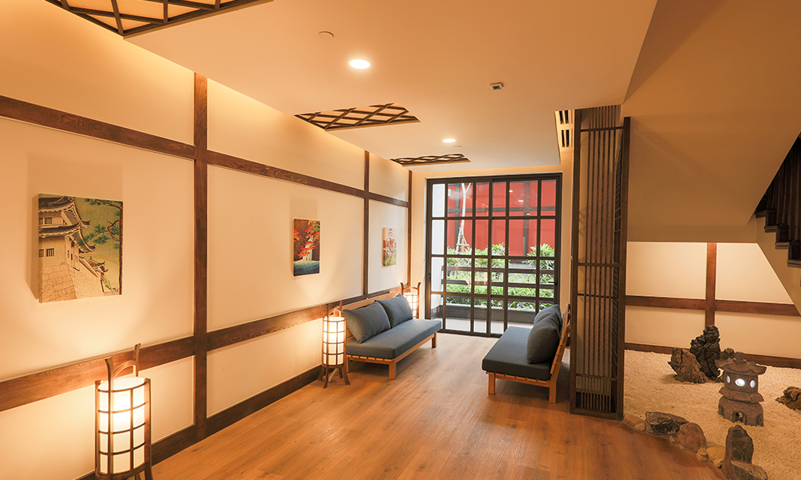
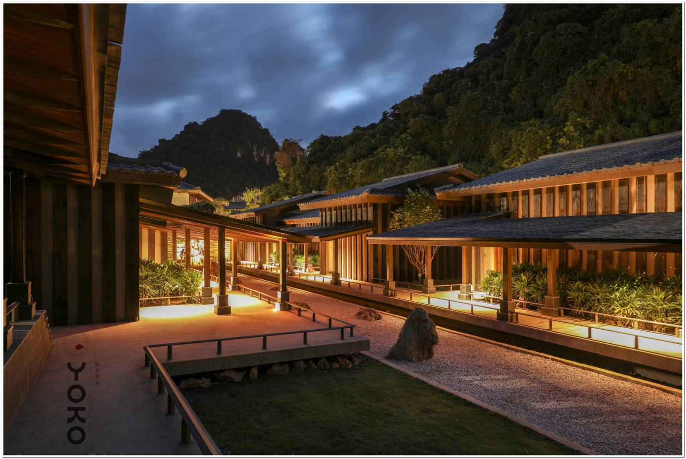

Nhà nghỉ theo giờ
Với thiết kế theo lối kiến trúc truyền thống Nhật Bản cùng phòng tắm và khu vực xông hơi riêng, bạn sẽ có một không gian thư thái trong căn phòng Washitsu 40m2.Căn phòng này phù hợp cho mọi nhu cầu nghỉ dưỡng dù bạn đi nghỉ cá nhân hay cùng gia đình.Cùng tận hưởng không gian onsen có một không hai này với trà, café, hoa quả tươi và bánh mochi tuyệt hảo.Bên cạnh đó wifi internet tốc độ cao cùng với các ứng dụng giải trí hiện đại như Smart TV cũng sẽ tối đa hóa trải nghiệm hoàn hảo của bạn và gia đình. Hãy đến đắm mình trong sự hài hòa, tĩnh lặng khỏi bộn bề cuộc sống. Thoát khỏi sự hỗn loạn hàng ngày, nghỉ ngơi và thư giãn trong giây lát khi bạn đặt phòng Washitsu Nhật Bản tuyệt đẹp và đích thực của chúng tôi trong thời gian lên đến 6 giờ tại Yoko Onsen. Thiên đường của riêng bạn.
Nhà nghỉ qua đêm
Khám phá sự tiện nghi sang trọng và lợi ích của việc tắm onsen riêng và được bao quanh bởi vẻ đẹp tự nhiên tuyệt đẹp, khi bạn thư giãn trong căn washitsu rộng 40 m2 này. Với 2 bể tắm riêng và phòng xông hơi được thiết kế để cung cấp cho các cặp đôi hoặc gia đình những trải nghiệm sang trọng. Thưởng thức trái cây và bánh mochi chào đón ngon lành khi check-in. Truy cập các tiện nghi của công nghệ hiện đại bao gồm wifi tốc độ cao và Smart TV, cùng với bộ ấm pha trà & cà phê. Đây là sự lựa chọn hoàn hảo cho một nơi nghỉ ngơi thư giãn cho các gia đình. Khi bạn đặt một phòng nghỉ qua đêm tại Yoko Onsen bạn sẽ được thư giãn và cảm thấy sáng khoải, tươi trẻ với không gian riêng tư của Washitsu. Chào đón bình minh trong khi bạn ngâm mình trong suối nước nóng ngoài trời riêng tư và tận hưởng buổi tối với đồ ăn nhẹ miễn phí (Kyusu).